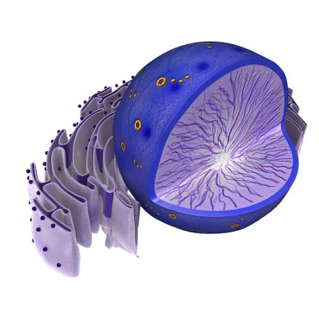

O núcleo é o centro de controle das células eucarióticas, onde está armazenada a maior parte do DNA. Ele é envolto por uma membrana dupla, chamada envoltório nuclear, que separa o conteúdo nuclear do citoplasma.

Suas principais funções incluem a replicação do DNA e a síntese de RNA, que são essenciais para a transmissão da informação genética e a produção de proteínas na célula. O núcleo também desempenha um papel importante na regulação das atividades celulares e na coordenação do ciclo celular.